vgames <- read.csv("data/vgames_study.csv")30 Introduction to ggplot2: the grammar of graphics in practice
Section 5 of this book focuses on data visualization in practice and on communicating findings clearly. The principles of good data visualization were introduced in Chapter 10. The actual code for producing those visualizations was hidden in that chapter and in every chapter since, with the promise that we would come back to it. This is that chapter.
We will use ggplot2, the most widely used and most flexible data visualization package in R. It is built on a particular philosophy of how plots should be constructed, called the grammar of graphics. Understanding that philosophy is the key to using ggplot2 well. Once the underlying logic clicks, building any plot becomes a matter of stacking the right pieces together rather than memorizing a long list of commands.
This is the first chapter in Section 5, and like the rest of the section, it is unapologetically code-heavy. The goal here is not to teach every option ggplot2 offers (there are entire books for that, including Wickham, Navarro, & Pedersen, 2024). The goal is to give you the core intuition for how ggplot2 thinks about a plot, so you can read and write the code with confidence. The next chapters in Section 5 will build on this foundation to cover specific kinds of plots: visualizations for means and spread, count variables, distributions, coefficient and forest plots, and so on.
30.1 Why ggplot2?
R has more than one way to make a plot. Base R has a plot() function that works fine for quick exploratory looks. There are other packages too. So why bother learning ggplot2?
Three reasons.
First, ggplot2 is the de facto standard in modern R-based data analysis, especially in psychology and other empirical sciences. If you read methods sections of papers, look at code on GitHub, or take any modern R course, you will see ggplot2 everywhere. Learning it gives you access to a huge body of community work.
Second, ggplot2 is unusually principled. It is built on a small set of consistent ideas that, once learned, generalize across every type of plot you might want to make. Where base R’s plotting commands tend to be ad hoc (a different command for each plot type, each with its own quirks), ggplot2 uses the same logic to build a scatterplot, a histogram, a boxplot, a bar chart, a heatmap, or anything else. Learning the logic once pays off across every visualization you ever build.
Third, ggplot2 produces publication-quality output by default. The plots look professional with very little effort, and the moment you need to customize them (which is often, in published research), the system is built to make customization principled rather than fiddly.
30.2 The grammar of graphics, briefly
Chapter 10 introduced the grammar of graphics as a Venn diagram with three overlapping components: the data, the aesthetics, and the geometry. The idea behind ggplot2, which traces back to Wilkinson (2005) and to Wickham (2010), is that every statistical plot can be described as a combination of these three things plus a few decorations:
- Data: the underlying data frame. The rows and columns from which the plot is built.
- Aesthetics: how columns of the data are mapped to visual properties of the plot. The x-axis position, the y-axis position, the color of the points, the size of the bars, the shape of the markers, the transparency. Each of these is an aesthetic, and each one can be mapped to a column of the data.
- Geometry (the geom): the type of visual element used to represent the data. Points for a scatterplot, bars for a bar chart, lines for a line plot, a histogram for a histogram, and so on.
Build a plot by specifying these three things, and ggplot2 figures out the rest.
A few extras then refine the result:
- Scales: how the values in the data map to the values on the axes (linear, log, categorical, etc.).
- Facets: how the plot is divided into small multiples (for example, one panel per experimental condition).
- Themes: the overall look (fonts, background, gridlines, title placement).
- Labels: axis titles, plot titles, captions, legends.
We will meet each of these in turn. The order matters less than the conceptual framing: data + aesthetics + geom is the heart of every plot.
30.3 Your first plot: building it step by step
Let us build a plot piece by piece, using the vgames_study data we have used throughout the book. The goal will be a scatterplot of trait hostility against aggression, with violent and neutral conditions colored differently.
First, load the data.
The most minimal ggplot2 call looks like this:
ggplot(data = vgames, aes(x = trait_hostility, y = aggression))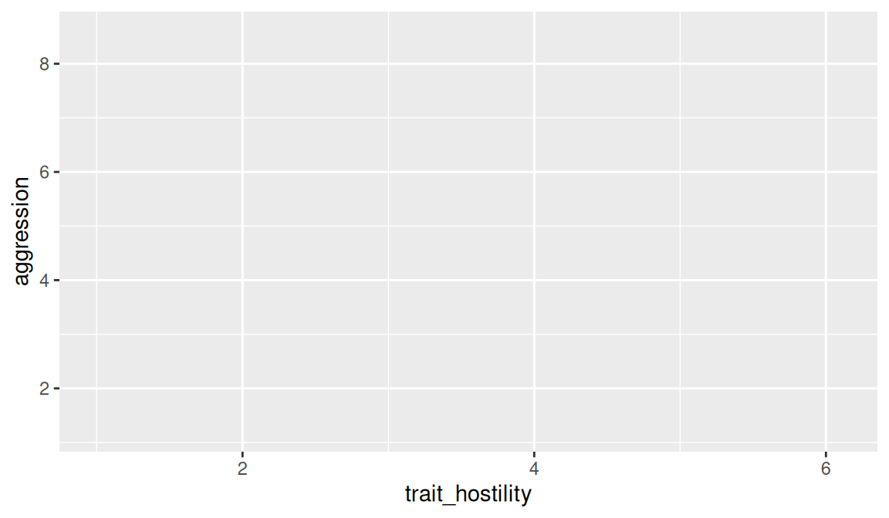
Notice what just happened. We told ggplot2:
- the data is
vgames, - the x aesthetic is
trait_hostility(so this column will determine horizontal position), - the y aesthetic is
aggression(this column will determine vertical position).
But we have not specified a geom yet. So ggplot2 drew the canvas with the right axes, the right scale, and the right axis labels, but did not draw anything on it. There is nothing for the points to be points of. We need to add a geom.
Now add geom_point() to draw points at each row’s (x, y) position:
ggplot(data = vgames, aes(x = trait_hostility, y = aggression)) +
geom_point()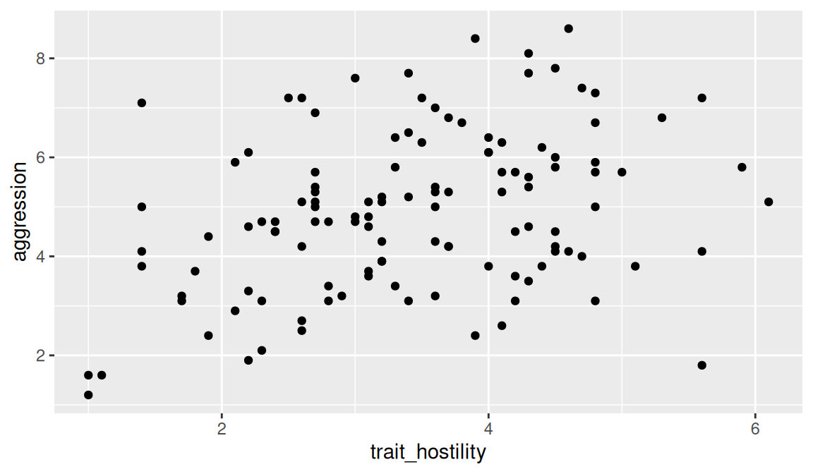
That is your first scatterplot. The + symbol is how ggplot2 adds layers to the plot. Read the code from top to bottom: “Start a plot using vgames data, map trait_hostility to x and aggression to y, then add a point for each row.”
Now color the points by experimental condition. Inside aes(), we add color = condition:
ggplot(data = vgames, aes(x = trait_hostility, y = aggression,
color = condition)) +
geom_point()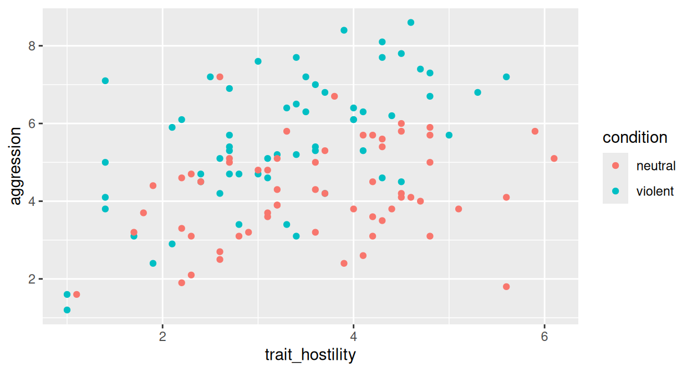
ggplot2 has automatically assigned a different color to each level of condition and added a legend. We did not have to specify the colors manually or build the legend manually; that is the kind of thing the grammar takes care of when you map an aesthetic to a column.
Finally, add a regression line for each condition with geom_smooth():
ggplot(data = vgames, aes(x = trait_hostility, y = aggression,
color = condition)) +
geom_point() +
geom_smooth(method = "lm", se = TRUE, formula = y ~ x)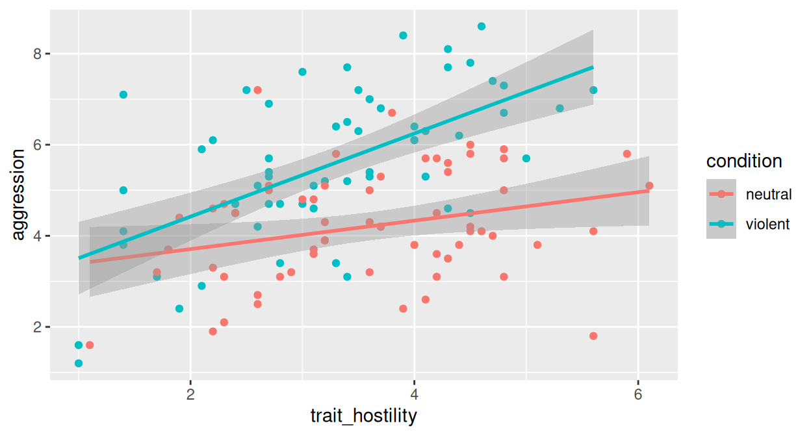
Notice how the new geom inherits the same x, y, and color mappings from the top-level ggplot() call. Because we mapped color to condition at the top, both the points and the lines are colored by condition. This is the point of the layered grammar: the data and aesthetic mappings flow downward through all the layers unless overridden.
Read the final code from top to bottom and you have the entire structure of the plot in front of you: start with this data, map these aesthetics, add points, add a smoothing line. Four lines of code, one publication-ready figure.
30.4 Mapping vs setting: inside or outside aes()?
One of the most common sources of confusion when starting with ggplot2 is the distinction between mapping an aesthetic to a column of data and setting an aesthetic to a constant value. The rule is simple: anything that depends on the data goes inside aes(); anything that is a constant goes outside aes().
Compare these two calls:
library(ggplot2)
plot_mapped <- ggplot(vgames, aes(x = trait_hostility, y = aggression)) +
geom_point(aes(color = condition)) +
labs(title = "color INSIDE aes(): mapped to data") +
theme_minimal(base_size = 9)
plot_set <- ggplot(vgames, aes(x = trait_hostility, y = aggression)) +
geom_point(color = "steelblue") +
labs(title = "color OUTSIDE aes(): constant value") +
theme_minimal(base_size = 9)
if (requireNamespace("patchwork", quietly = TRUE)) {
patchwork::wrap_plots(plot_mapped, plot_set, ncol = 2)
} else {
gridExtra::grid.arrange(plot_mapped, plot_set, ncol = 2)
}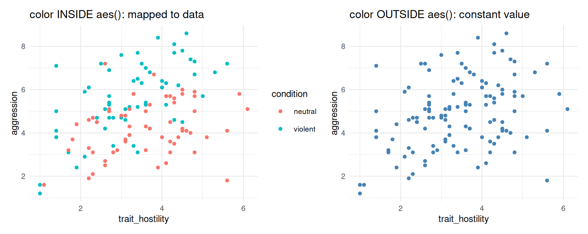
In the left panel, color = condition is inside aes(). We are mapping the color aesthetic to the values of the condition column. ggplot2 picks two different colors automatically and adds a legend.
In the right panel, color = "steelblue" is outside aes(). We are setting the color of all points to a single fixed value, "steelblue". There is no legend because there is no mapping from data to color; every point gets the same color regardless of the data.
The same rule applies to all aesthetics. size = 3 outside aes() sets every point to the same size. size = aggression inside aes() would scale the point size by the aggression score. alpha = 0.4 outside makes everything 40% transparent. alpha = trait_hostility inside would make each point’s transparency depend on the hostility value.
When you see ggplot code that produces unexpected output, the first thing to check is usually whether an aesthetic ended up in the wrong place. A common mistake is writing geom_point(aes(color = "steelblue")), which treats the literal string "steelblue" as if it were a column of data with a single value; ggplot2 then assigns some color to that one-level column (often not steelblue at all) and adds a legend showing the literal text “steelblue”. The fix is to move it outside: geom_point(color = "steelblue").
30.5 A short tour of common geoms
ggplot2 has dozens of geoms. You will probably use eight or ten regularly. We illustrate the most common ones in turn, each on the vgames_study data.
geom_point() for scatterplots, as we have already seen.
geom_histogram() for the distribution of a single continuous variable. Only an x aesthetic is required:
ggplot(vgames, aes(x = aggression)) +
geom_histogram(binwidth = 0.5, fill = "steelblue",
color = "white")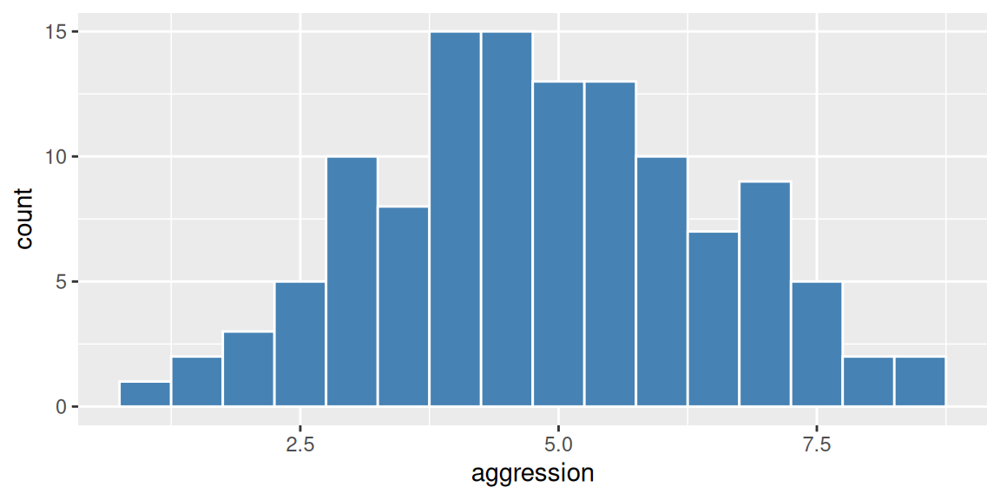
The binwidth argument controls how wide each bin is. The fill argument sets the bar color (note: color would set the outline color of the bars; for histograms and bars, the inside is controlled by fill).
geom_boxplot() for comparing the distribution of a continuous variable across groups:
ggplot(vgames, aes(x = condition, y = aggression)) +
geom_boxplot(fill = "lightblue")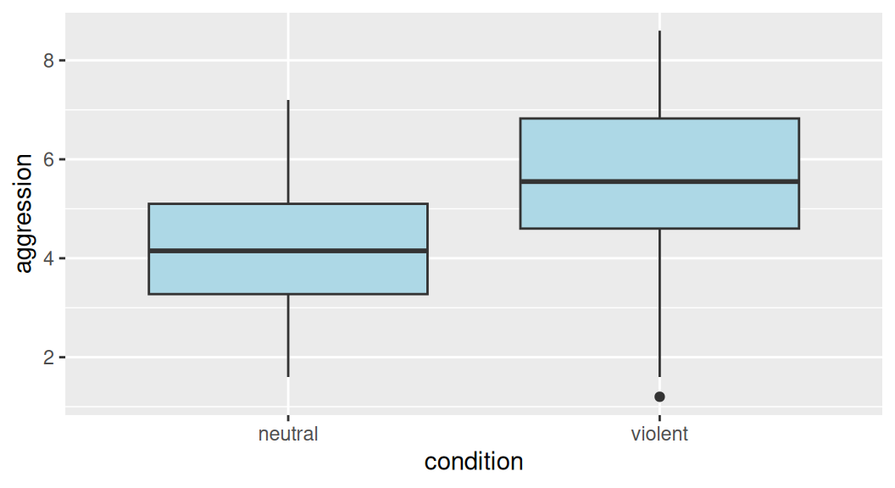
The box shows the middle 50% of the data (from the 25th to the 75th percentile), the line inside the box is the median, the whiskers extend out to the smallest and largest “non-outlying” values, and any points beyond the whiskers are shown individually as potential outliers.
geom_bar() and geom_col() for bar charts. geom_bar() counts the rows in each category for you; geom_col() plots a value you supply.
ggplot(vgames, aes(x = condition)) +
geom_bar(fill = "steelblue")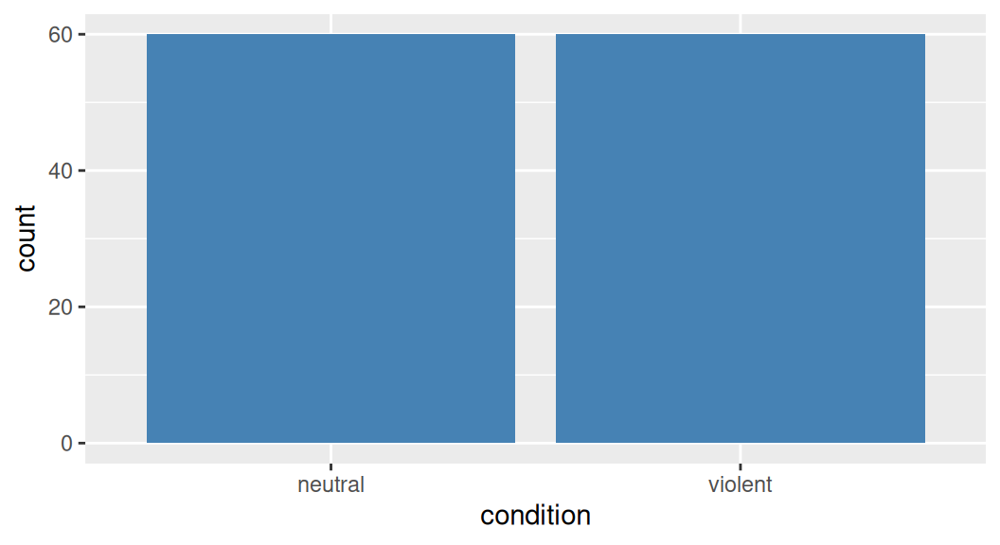
Here, no y aesthetic is needed because geom_bar() is computing the row count for each level of condition. We will see in Chapter 31 why bar charts of means (as opposed to counts) are usually a bad idea and what to use instead.
geom_smooth() adds a smoothed regression line. We have already used it with method = "lm" for a linear fit. The default method = "loess" adds a non-parametric smooth that bends with the data.
geom_line() connects points with a line, useful for time series or for showing trends:
agg_summary <- vgames |>
group_by(condition) |>
summarize(
mean_aggression = mean(aggression),
.groups = "drop"
)
ggplot(agg_summary, aes(x = condition, y = mean_aggression, group = 1)) +
geom_line() +
geom_point(size = 3)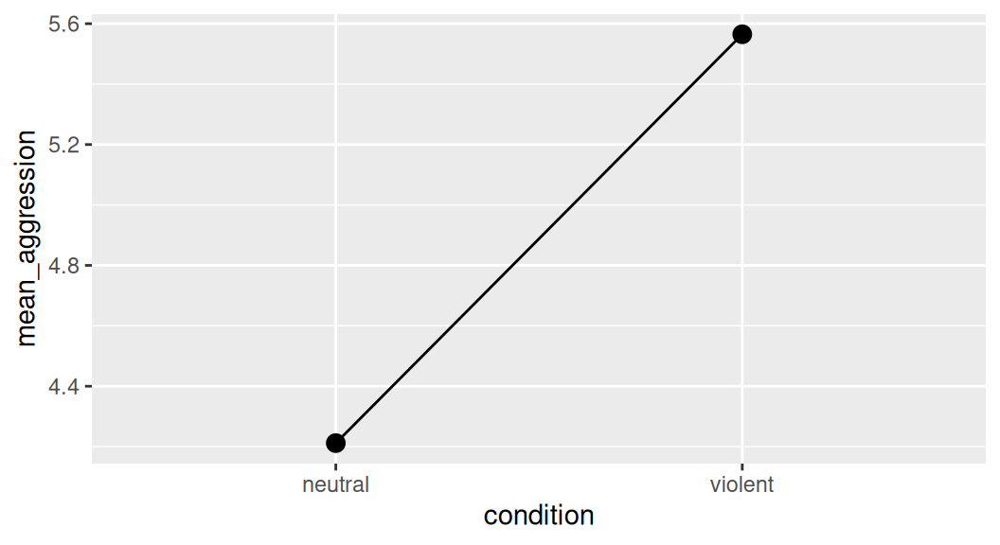
The group = 1 aesthetic tells ggplot2 that the line should connect across categories (without it, ggplot would draw a line per group, which here means no line at all because each group has only one point).
geom_density() plots a smoothed estimate of the density of a continuous variable:
ggplot(vgames, aes(x = aggression, fill = condition)) +
geom_density(alpha = 0.4)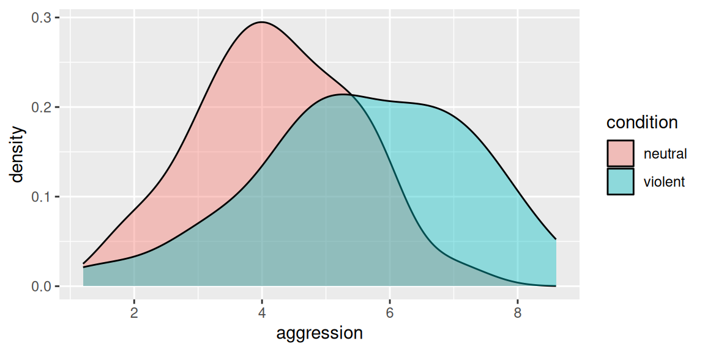
The alpha = 0.4 makes the fills semi-transparent so we can see both densities even where they overlap. This kind of overlapping-density plot will return in Chapter 33 in the context of visualizing distributions.
These are the geoms you will reach for most often. Each follows the same pattern: a name like geom_*(), some required and optional arguments, and use of the inherited aesthetics from the top-level ggplot() call.
30.6 Faceting: small multiples
A common need is to split a plot into multiple panels, one per category. This is called faceting. The function facet_wrap() lays the panels out in a wrapped grid, and facet_grid() lays them in a strict row-by-column grid.
ggplot(vgames, aes(x = trait_hostility, y = aggression)) +
geom_point() +
facet_wrap(~ condition)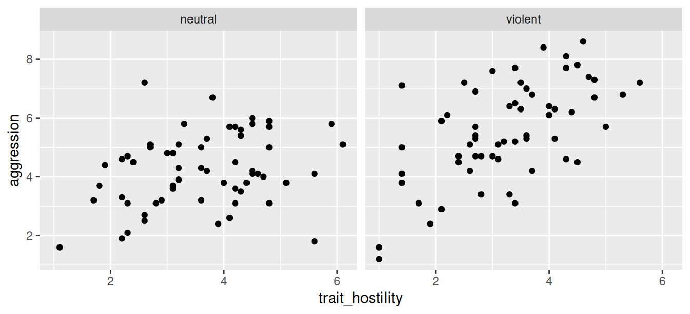
The formula ~ condition tells ggplot2 to make one panel per unique value of condition. The same x and y axes are used in each panel by default (so the panels are directly comparable), but options exist to free the scales per panel if needed.
Faceting is one of ggplot2’s most useful features. Whenever you find yourself thinking “I want to make the same plot for each subgroup of the data,” facet it instead of writing a loop.
30.7 Customizing the look: themes and labels
By default, ggplot2 uses a grey background with white gridlines and a sensible default font. You can change all of this. The two most common customizations are themes (the overall visual style) and labels (the text on the plot).
The function theme_minimal() switches to a clean minimal look with a white background. Other built-in themes include theme_classic(), theme_bw(), theme_light(), and theme_dark(). Add them at the end of the plot:
ggplot(vgames, aes(x = trait_hostility, y = aggression,
color = condition)) +
geom_point() +
geom_smooth(method = "lm", se = FALSE, formula = y ~ x) +
theme_minimal()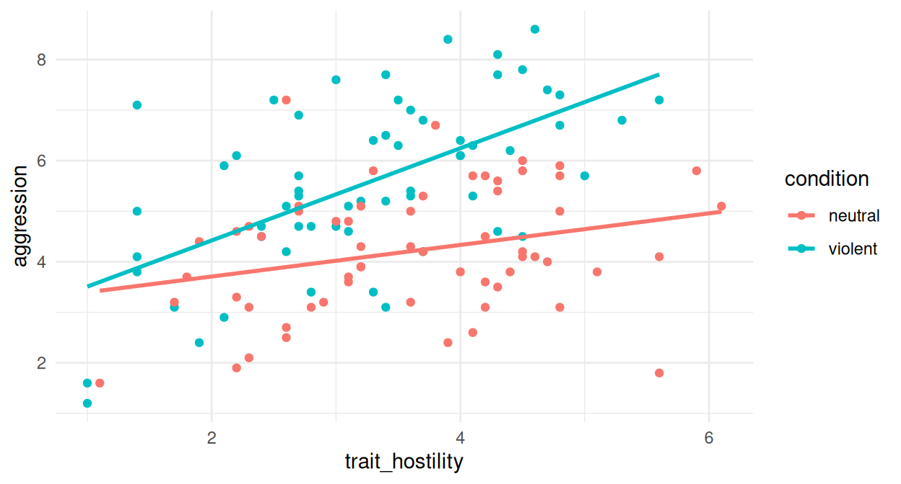
To set the title, axis labels, and other text, use labs():
ggplot(vgames, aes(x = trait_hostility, y = aggression,
color = condition)) +
geom_point() +
geom_smooth(method = "lm", se = FALSE, formula = y ~ x) +
labs(
title = "Aggression as a function of trait hostility",
subtitle = "By experimental condition (violent vs neutral)",
x = "Trait hostility (1-7 scale)",
y = "Aggression (1-10 scale)",
color = "Condition",
caption = "Source: vgames_study (n = 120)"
) +
theme_minimal()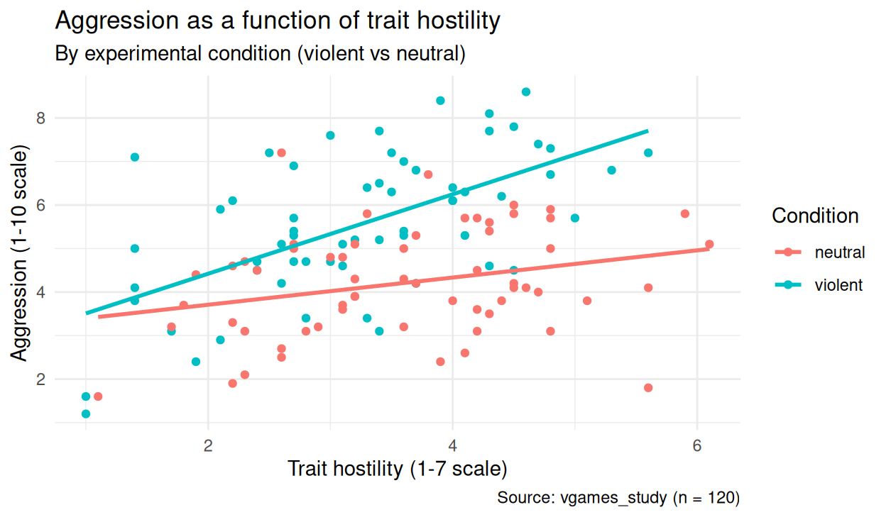
Each entry of labs() is optional. Set as many or as few as you need. The argument names map to aesthetics, so color = "Condition" changes the legend title for the color mapping.
To fine-tune individual aspects of the theme (font size, legend position, gridline color), use theme() with specific arguments. For example, to move the legend to the bottom and increase the title size:
ggplot(vgames, aes(x = trait_hostility, y = aggression,
color = condition)) +
geom_point() +
geom_smooth(method = "lm", se = FALSE, formula = y ~ x) +
labs(title = "Aggression as a function of trait hostility",
x = "Trait hostility (1-7 scale)",
y = "Aggression (1-10 scale)",
color = "Condition") +
theme_minimal(base_size = 12) +
theme(
legend.position = "bottom",
plot.title = element_text(face = "bold", size = 14)
)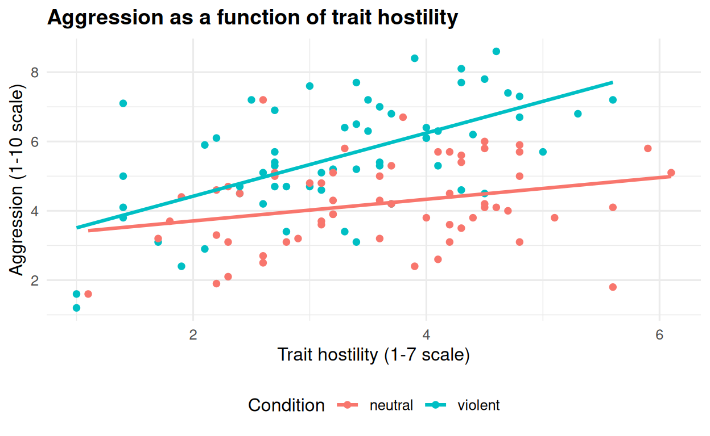
theme() has a long list of options. Look up ?theme when you need to control something specific.
30.8 Saving a plot to a file
To save a plot to a file, use ggsave(). It picks the file format from the extension (.png, .jpg, .pdf, .svg, etc.) and writes the last plot you created to the chosen path.
ggsave(
filename = "hostility_aggression.png",
width = 6,
height = 4,
units = "in",
dpi = 300
)By default, ggsave() saves the most recently displayed plot. To save a specific plot (one you have assigned to a variable), pass it as the plot argument:
p <- ggplot(vgames, aes(x = trait_hostility, y = aggression)) +
geom_point() +
theme_minimal()
ggsave("my_plot.png", plot = p, width = 6, height = 4, dpi = 300)For final figures in a paper, set dpi = 300 or higher and check the visual result. For draft figures or exploratory output, defaults are usually fine.
30.9 The coding intuition: how to read and write ggplot2 code
The single most useful habit when reading or writing ggplot2 code is to read it as a sentence. Every plot has the same structure:
Start a plot using this data, map these columns to these aesthetics, then add these layers (points, lines, bars, etc.), then facet by this column, then change the labels and the theme.
Read the components in order. When you see ggplot(vgames, aes(x = ..., y = ..., color = ...)), that is the data and the global aesthetics. When you see + geom_point(), that is a layer. When you see + facet_wrap(~ condition), that is a facet. When you see + labs(...) + theme_minimal(), that is decoration. The plot is constructed in that order, and you should read it in that order.
When writing ggplot2 code, follow the same logic. Start with the data and the essential aesthetics (typically x and y). Add the geom you want. If you need points colored or sized by some variable, add that aesthetic mapping (either at the top level for everything, or inside a single geom if just for one layer). If you need multiple panels, add a facet. If you need a particular look, add a theme and labels at the end.
The order of layers also matters visually: layers added later are drawn on top of earlier ones. If you want a regression line behind the points, write geom_smooth() first; if you want it in front, write geom_smooth() last. This is the same logic as drawing on a transparency stack.
Once you have internalized this pattern, you will be able to read any ggplot2 code you encounter, and you will be able to construct any plot you can imagine by stacking the right components together.
The chapters in the rest of Section 5 apply this foundation to specific kinds of visualizations: visualizing means and spread (Chapter 31), count variables (Chapter 32), distributions (Chapter 33), and so on. Each chapter will introduce the geoms and customizations most useful for that specific purpose. The grammar stays the same throughout.
30.10 Check your understanding
1. Which of the following best describes the grammar of graphics as implemented in ggplot2?
2. What is the difference between setting an aesthetic inside aes() and outside aes() in ggplot2?
3. What does geom_point() do in a ggplot2 call?
4. What does facet_wrap(~ condition) do in a ggplot2 call?
5. How does the order in which layers are added affect the appearance of a ggplot2 plot?
6. What does the ggsave() function do in ggplot2?
7. What does the labs() function control in a ggplot2 plot?
30.11 References
Wickham, H. (2010). A layered grammar of graphics. Journal of Computational and Graphical Statistics, 19(1), 3-28. https://doi.org/10.1198/jcgs.2009.07098
Wickham, H., Navarro, D., & Pedersen, T. L. (2024). ggplot2: Elegant graphics for data analysis (3rd ed.). Springer. https://ggplot2-book.org/
Wilkinson, L. (2005). The grammar of graphics (2nd ed.). Springer. https://link.springer.com/book/10.1007/0-387-28695-0